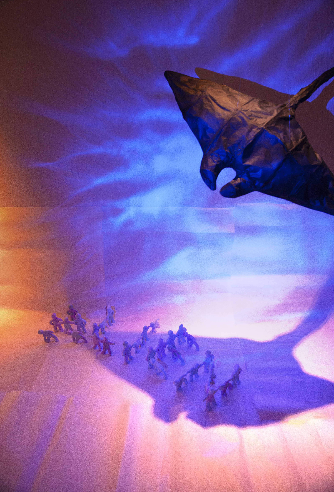
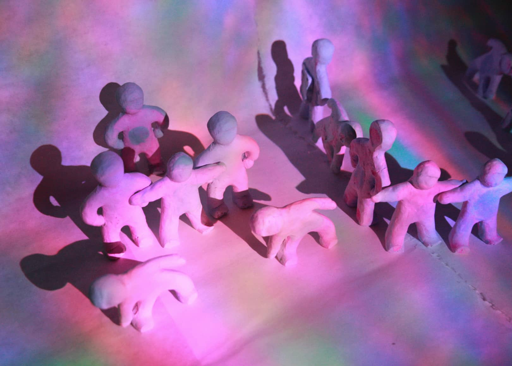
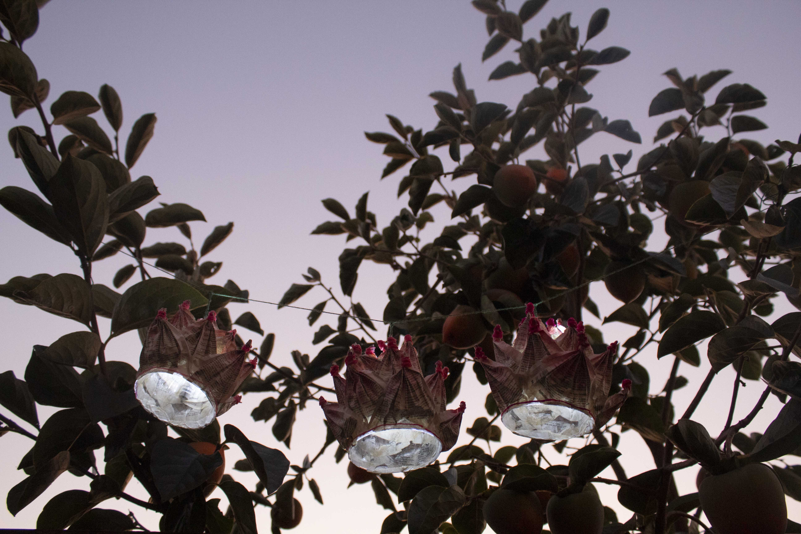

"The Taste of the Greed," 2021
Medium: PETG, Chipboard, Great Stuff, binder ring, faux fur, 44" x 20" x 19"
Description:
When I was young, I was so greedy that I needed two ice creams for each hand. Using vacuum formation, I liked to bring all sorts of greedy elements along with ice creams in the 3d scrapbook.


"Alien," 2021
Medium: Projection mapping on the mold making plaster objects and wired object covered with Hanji(Korean traditional paper)mantaray
Description:
My mind states changing in States as an alien(foreigner) were the base for different poses of figures: confusion, copying(assimilation), and pride.

"2020 SipJangsaengdo," 2020
Medium: digital print on watercolor papers dyed with lotus root tea, 6in x18in
Description:
This piece is 2020 Sipjangsaengdo, a historical reinterpretation of Sipjangsaengdo, folding screen painting of the ten symbols of longevity, painted in the 19 century in Joseon Dynasty (Korea) by court painters. They hoped for eternal life and a long healthy life through this painting. They decorated the palace and near the bed with this folding screen to get good energy. I made this folding screen to get healthy and good energy by choosing and having 10 objects that remind us of longevity these days. Like ancestors, I wanted to give and have a good energy from this folding screen of modernized ten symbols of longevity.


"Enlightening," 2020
Medium: Thesaurus, threads, recycled plastic cups, LED light bulbs
Description:
The lotus is symbols of purity and self-regeneration in Buddhism, and people make and light up lotus lanterns on Buddha’s birthday
because lanterns brighten up the darkness just like the enlightenment brightens up the worlds of ignorance.
I volunteered making lotus lanterns when I lived in the Buddhist temple for two years,
so lotus lanterns mean a lot to me.
I am an international student from South Korea, and English is my second language.
On WST(Writing Skills Test) day, I felt ashamed that I was the only one who brought thesaurus and flipped pages around during the test.
After that day, whenever I see the thesaurus, I want to tear it apart because it reminds me of WST day.
Yet, I understand how English developed my life with many possibilities and helped me pursue my dreams:
English, the language enlightened my life with possibilities.
And thesaurus was a big helper to open my eyes to the English world.
Thus, I decided to create lotus lanterns made out of thesaurus.
Tearing off thesaurus was a thrilling process. The real lotus lanterns are made out of very thin pre-folded papers.
However, it took some time to create delicate petals by folding each thick thesaurus paper.
Then, I glued all the floral leaves together on the recycled plastic cup that I brought from one of the parties last year,
and I painted papers with watercolor. To present a warm feeling, I winded three different pinks threads on the each tip of the petal.
At last, I added LED small lights in the plastic cup to brighten the darkness.
All of the materials were sitting in my room with dust.
It was a meaningful project that I could collaborate with my weakness and my values together.
Like the lotus lantern, I want to be the person who can brighten up the world kindly.